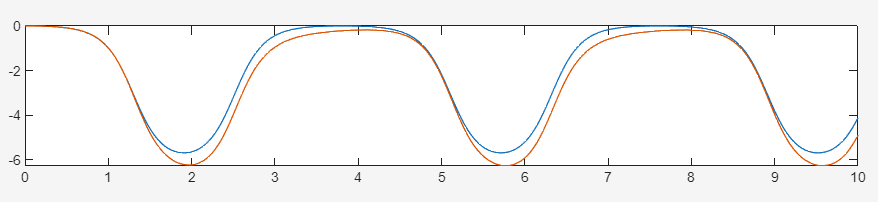
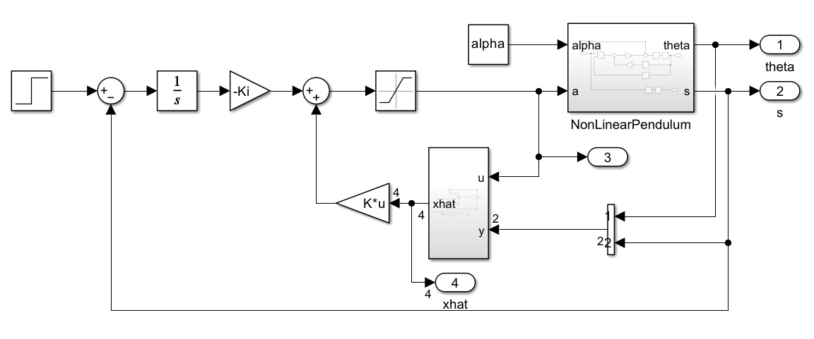
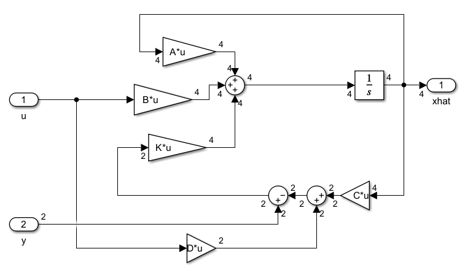
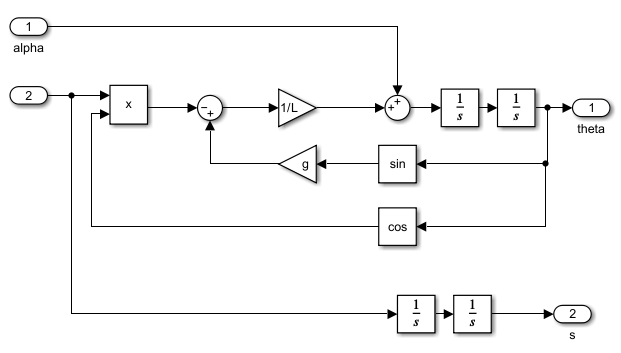
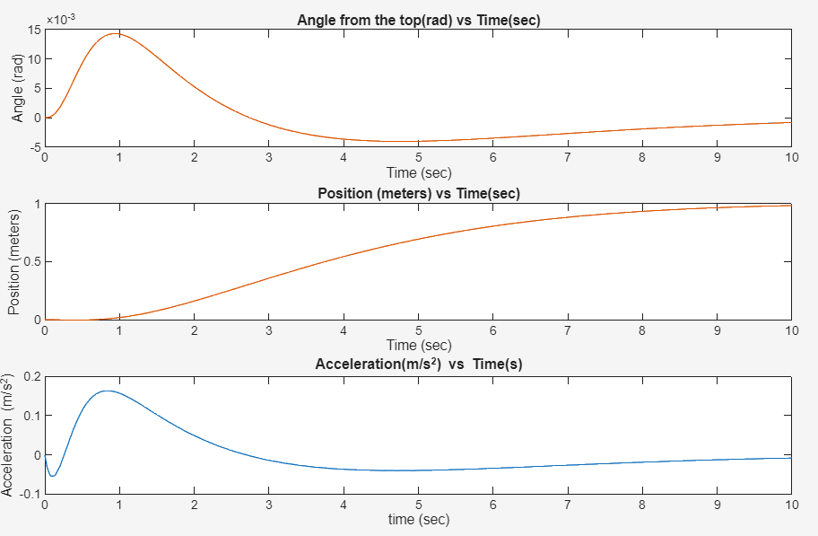
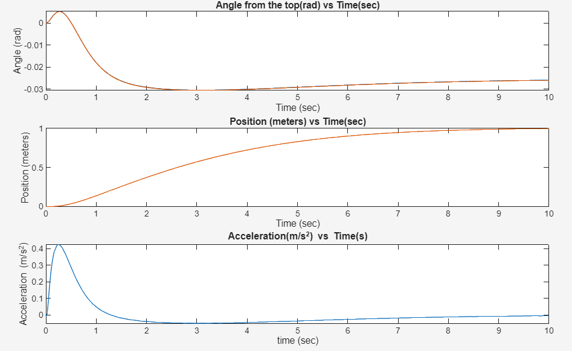
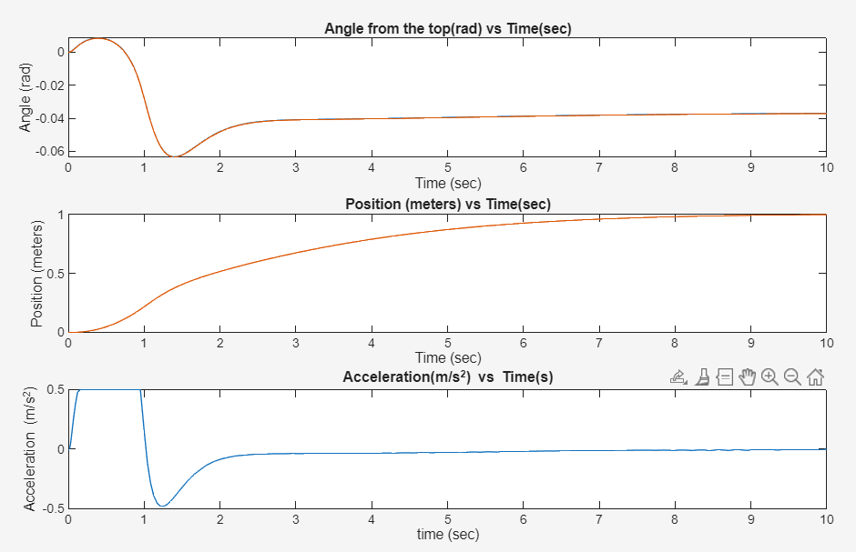
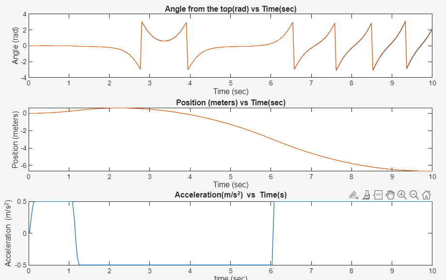
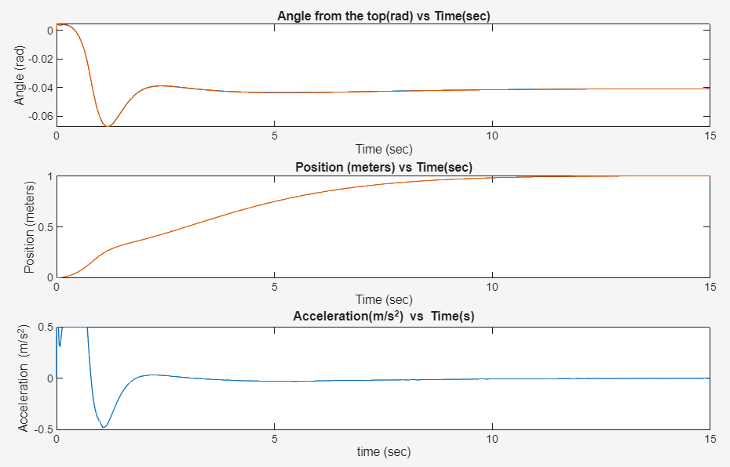

Inverted Pendulum on a Cart
Pole-placement state feedback with integral action and a full-state observer, tested on a nonlinear plant
Overview
The goal of this project was to balance an inverted pendulum on a cart while moving the cart 1 m in 10 s without overshooting. A constant disturbance torque pushes on the pendulum the whole time, and the cart’s acceleration is limited to ±0.5 m/s².
I linearized the dynamics, designed a state-feedback controller with integral action and a Luenberger observer, and then tested the linear controller in Simulink against the full nonlinear pendulum model. The final controller handles disturbances up to \(\alpha \approx 0.72\) rad/s² before the acceleration limit makes it lose the pendulum.
Developed for Harvey Mudd’s Advanced Systems Engineering course (E102).
Dynamics
With \(\theta\) measured from vertical, \(s\) the cart position, \(a\) the cart acceleration (the control input), and \(\alpha\) a disturbance acting on the pendulum:
\[ L\ddot{\theta} - g\sin\theta = -a\cos\theta + L\alpha, \qquad \ddot{s} = a \]
Linearization and state-space model
For small angles, \(\sin\theta \approx \theta\) and \(\cos\theta \approx 1\). With state \(\mathbf{x} = [\theta,\ \dot\theta,\ s,\ \dot s]^T\), input \(u = a\), and disturbance \(w = \alpha\):
\[ \dot{\mathbf{x}} = \begin{bmatrix} 0 & 1 & 0 & 0 \\ \frac{g}{L} & 0 & 0 & 0 \\ 0 & 0 & 0 & 1 \\ 0 & 0 & 0 & 0 \end{bmatrix}\mathbf{x} + \begin{bmatrix} 0 \\ -\frac{1}{L} \\ 0 \\ 1 \end{bmatrix} u + \begin{bmatrix} 0 \\ 1 \\ 0 \\ 0 \end{bmatrix} w, \qquad \mathbf{y} = \begin{bmatrix} 1 & 0 & 0 & 0 \\ 0 & 0 & 1 & 0 \end{bmatrix}\mathbf{x} \]
Both the angle and the cart position are measured, and \(\mathbf{D} = \mathbf{0}\). With \(L = 0.5\) m and \(g = 9.81\) m/s²:
\[ \mathbf{A} = \begin{bmatrix} 0 & 1 & 0 & 0 \\ 19.62 & 0 & 0 & 0 \\ 0 & 0 & 0 & 1 \\ 0 & 0 & 0 & 0 \end{bmatrix},\quad \mathbf{B} = \begin{bmatrix} 0 \\ -2 \\ 0 \\ 1 \end{bmatrix},\quad \mathbf{C} = \begin{bmatrix} 1 & 0 & 0 & 0 \\ 0 & 0 & 1 & 0 \end{bmatrix},\quad \mathbf{D} = \begin{bmatrix} 0 \\ 0 \end{bmatrix} \]
- Open-loop poles: \(\pm 4.43,\ 0,\ 0\). The pole at \(+4.43\) makes the upright pendulum unstable.
- Controllability and observability matrices both have rank 4, so every state can be controlled and estimated.
Controller design
Integral action
A constant disturbance would leave a steady-state position error under plain state feedback. To remove it, I augmented the state with the integral of the position error. This gives five gains: four on the state and one on the integrator.
\[ \mathbf{A_a} = \begin{bmatrix} \mathbf{A} & \mathbf{0} \\ -\mathbf{C}_s & 0 \end{bmatrix}, \qquad \mathbf{B_a} = \begin{bmatrix} \mathbf{B} \\ 0 \end{bmatrix} \]
Pole placement
The cart must reach 1 m in 10 s with no overshoot. I placed a dominant pole pair from a second-order response with a 1 % settling time of 10 s:
\[ \omega_n = \frac{4.6}{10\,\zeta}, \qquad s = -\zeta\omega_n \pm \omega_n\sqrt{1-\zeta^2}\,j \]
The other three poles sit about 10× further left (at \(-10\zeta\omega_n\), \(-10.1\zeta\omega_n\), \(-10.2\zeta\omega_n\)) so they do not affect the dominant response.
My first instinct was critical damping. Testing showed that \(\zeta = 0.9\) (\(\omega_n = 0.511\) rad/s) reaches the target noticeably faster and still does not overshoot. place then gives:
\[ \mathbf{K} = \begin{bmatrix} -51.51 & -11.63 & -5.56 & -8.40 \end{bmatrix}, \qquad K_i = 1.335 \]
Observer
The observer estimates the full state from the measured \(\theta\) and \(s\). Its poles were placed at \(-73\) to \(-76\), far faster than the controller, so the estimate converges almost immediately. Slower observer poles (around \(-20\)) visibly lagged the true state, and the controller then acted on stale information:

Very fast observer poles work here because the simulated sensors are noise-free. On real hardware, fast observer poles amplify measurement noise, so they would need to be slower and tuned as a tradeoff.
Simulink model


The plant block uses the full nonlinear equations with \(\sin\theta\) and \(\cos\theta\) rather than the linearized model, so the simulation tests how well the linear design holds up on the real dynamics:

Disturbance rejection
I increased the constant disturbance \(\alpha\) until the controller failed. Each plot shows the angle, cart position, and commanded acceleration.




The stability boundary lies between \(\alpha = 0.72\) and \(0.73\) rad/s².
Why it fails
A constant disturbance moves the pendulum’s equilibrium off vertical, to the angle where \(g\sin\theta = -L\alpha\). For \(\alpha = 0.5\) this predicts \(\theta = -0.0255\) rad, which matches where the simulated pendulum settles.
The pendulum starts at \(\theta = 0\) rather than at this new equilibrium, so the controller has to swing it over first. As \(\alpha\) grows, that correction needs more acceleration than the ±0.5 m/s² limit allows. Every failure follows the same pattern: the commanded acceleration saturates at −0.5 m/s², and the controller cannot recover.
Tuning for a larger disturbance (and why I didn’t use it)

A specially tuned version survived \(\alpha = 0.8\). It started from a pre-tilted initial state, delayed the position step by 1 s so the pendulum could settle first, and added a small non-zero feedthrough term. However, each of these changes relies on knowing the disturbance’s exact size and direction in advance. If \(\alpha\) changed sign or varied over time, this version would likely perform worse than the general design, so I kept the general design.
g = 9.81; % gravity (m/s^2)
L = 0.5; % pendulum length (m)
alpha = 0.5; % disturbance
maxaccel = 0.5; % actuator limit (m/s^2)
A = [0, 1, 0, 0;
g/L, 0, 0, 0;
0, 0, 0, 1;
0, 0, 0, 0];
B = [0; -1/L; 0; 1];
C = [1, 0, 0, 0;
0, 0, 1, 0];
D = [0; 0];
poles = eig(A); % open-loop stability
Control = rank(ctrb(A, B)); % controllability
Observability = rank(obsv(A, C)); % observability
% Augment with the integral of position error
Aa = [A, zeros(4,1);
-C(2,:), 0];
Ba = [B; 0];
zeta = 0.9; % fastest damping ratio with no overshoot
wn = 4.6/(10*zeta); % 1% settling in 10 s
ControlPoles = [-zeta*wn + wn*sqrt(1-zeta^2)*1j, ...
-zeta*wn - wn*sqrt(1-zeta^2)*1j, ...
-10*zeta*wn, -10.1*zeta*wn, -10.2*zeta*wn];
Ka = place(Aa, Ba, ControlPoles);
K = Ka(1:4);
Ki = Ka(5);
% Fast observer: the simulated sensors are noise-free
ObserverL = place(A', C', [-73, -74, -75, -76])';
sim('Simulink_inverted_pendulum.slx', 10);Takeaways
- A controller designed on a linearized model can work well on the nonlinear plant, as long as it keeps the system near the operating point where the linearization is valid.
- Actuator limits, not linear stability, set the real performance boundary. Every failure began when acceleration saturated.
- Observer speed is a tradeoff. In a noise-free simulation, faster is better. With real sensors, the observer poles would also need to filter noise.
- Tuning a controller for one exact scenario can make it look better while making it less robust. A natural next step would be to use pole placement as a starting point and then refine the gains with an optimizer (for example,
fminsearch) against a cost that includes robustness across a range of disturbances.